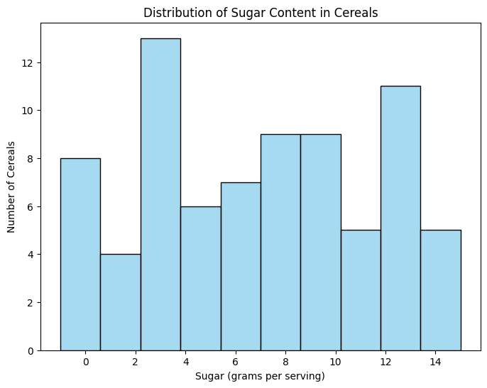
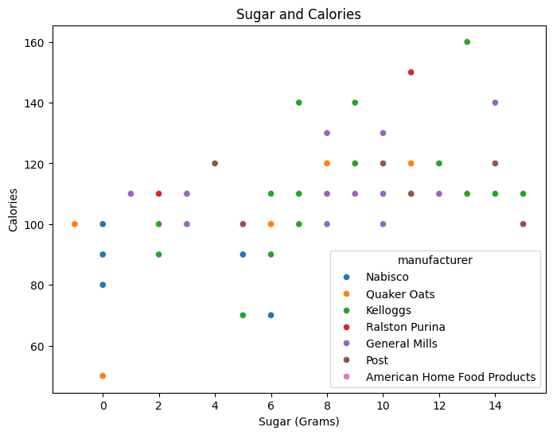
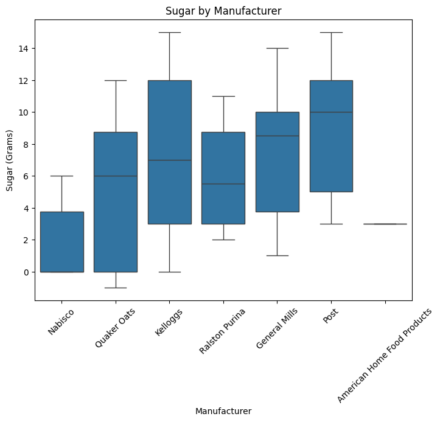

You’re working as a data analyst at a cereal marketing company in New York.
In a strategy meeting, the marketing director tells you that in 2018, the US weight loss industry was worth over $72 Billion dollars, growing 4% compared to the previous year.
In contrast, sales of cold cereal fell 6% to $8.5 billion during the same time period.
Cereal executives have approached the marketing company asking how they can somehow tap into the weight loss market growth to boost the sales of their cereal brands.
Your assignment is to analyze a dataset of nutritional information for major US cereals, and calculate some metrics that can be used by the marketing team.
Part 1: Import Pandas and load the data
Remember to import Pandas the conventional way. If you’ve forgotten how, you may want to review Data Exploration 01.
The dataset for this exploration is stored at the following url:
There are lots of ways to load data into your workspace. The easiest way in this case is to ask Pandas to do it for you.
Initial Data Analysis
Once you’ve loaded the data, it’s a good idea to poke around a little bit to find out what you’re dealing with.
Some questions you might ask include:
What does the data look like?
What kind of data is in each column?
Do any of the columns have missing values?
# Part 1: Enter your code below to import Pandas according to the# conventional method. Then load the dataset into a Pandas dataframe.# Write any code needed to explore the data by seeing what the first few# rows look like. Then display a technical summary of the data to determine# the data types of each column, and which columns have missing data.import pandas as pdurl ='https://raw.githubusercontent.com/byui-cse/cse450-course/master/data/cereal.csv'df = pd.read_csv(url)print(df.head())print(df.info())print(df.describe())
The marketing team has determined that when choosing a cereal, consumers are most interested in calories, sugars, fiber, fat, and protein.
First, let’s calcuate some summary statistics for these categories across the entire dataset. We’re particularly intrested in the mean, median, standard deviation, min, and max values.
A = American Home Food Products
G = General Mills
K = Kelloggs
N = Nabisco
P = Post
Q = Quaker Oats
R = Ralston Purina
Note: While the tutorial linked above uses the replace function, using the map function instead can often be much faster and more memory efficient, especially for large datasets.
# Display the count of values for the manufacturer code ("mfr" column), then# create a new column containing the appropriate manufacturer names.print(df['mfr'].value_counts())mfr_map = {'A': 'American Home Food Products','G': 'General Mills','K': 'Kelloggs','N': 'Nabisco','P': 'Post','Q': 'Quaker Oats','R': 'Ralston Purina'}df['manufacturer'] = df['mfr'].map(mfr_map)df.head()
mfr
K 23
G 22
P 9
R 8
Q 8
N 6
A 1
Name: count, dtype: int64
name
mfr
type
calories
protein
fat
sodium
fiber
carbo
sugars
potass
vitamins
shelf
weight
cups
rating
manufacturer
0
100% Bran
N
C
70
4
1
130
10.0
5.0
6
280
25
3
1.0
0.33
68.402973
Nabisco
1
100% Natural Bran
Q
C
120
3
5
15
2.0
8.0
8
135
0
3
1.0
1.00
33.983679
Quaker Oats
2
All-Bran
K
C
70
4
1
260
9.0
7.0
5
320
25
3
1.0
0.33
59.425505
Kelloggs
3
All-Bran with Extra Fiber
K
C
50
4
0
140
14.0
8.0
0
330
25
3
1.0
0.50
93.704912
Kelloggs
4
Almond Delight
R
C
110
2
2
200
1.0
14.0
8
-1
25
3
1.0
0.75
34.384843
Ralston Purina
Part 4: Visualization
Let’s do some more data exploration visually.
Import your visualization library of choice and set any needed configuration options.
# Import your visualization libraryimport seaborn as snsimport matplotlib.pyplot as plt
Sugar Distribution
Marketing tells us that their surveys have revealed that sugar content is the number one concern of consumers when choosing cereal.
They would like to see the following visualizations:
A histogram plot of the sugar content in all cereals.
A scatter plot showing the relationship between sugar and calories.
A box plot showing the distribution of sugar content by manufacturer.
# Create the three visualzations requested by the the marketing team# graph 1plt.figure(figsize=(8,6))sns.histplot(data=df, x='sugars', bins=10, kde=False, color='skyblue')plt.title('Distribution of Sugar Content in Cereals')plt.xlabel('Sugar (grams per serving)')plt.ylabel('Number of Cereals')plt.show()# graph 2plt.figure(figsize=(8,6))sns.scatterplot(data=df, x='sugars', y='calories', hue='manufacturer')plt.title('Sugar and Calories')plt.xlabel('Sugar (Grams)')plt.ylabel('Calories')plt.show()# graph 3plt.figure(figsize=(8,6))sns.boxplot(data=df, x='manufacturer', y='sugars')plt.title('Sugar by Manufacturer')plt.xlabel('Manufacturer')plt.ylabel('Sugar (Grams)')plt.xticks(rotation=45)plt.show()



Part 5: Dietary Calculations
The marketing team has been able to arrange a partnership between the popular Weight Watchers diet brand and Kelloggs cereal.
The Weight Watchers system assigns a point value to each food, and participants in the program are allotted a certain number of points each day.
The marketing team is pleased with what you’ve accomplished so far. They have a meeting with top cereal executives in the morning, and they’d like you to do as many of the following additional tasks as you have time for:
Weight Watchers used to have an older points system that used this formula: (calories / 50) + (fat / 12) - (fiber / 5), but only the first 4 grams of fiber were included in the calculation. For comparison’s sake, create an additional column with the calculation for the old points system.
Marketing really likes the boxplot of the sugar content for each cereal, they’d like similar plots for calories and fat, but using different color schemes for each chart.
# 2plt.figure(figsize=(8,6))sns.boxplot(data=df, x='manufacturer',y='calories', color='brown')plt.title('Calories by manufacturer')plt.xlabel('Manufacturer')plt.ylabel('Calories')plt.xticks(rotation=45)plt.show()plt.figure(figsize=(8,6))sns.boxplot(data=df, x='manufacturer',y='fat', color='green')plt.title('Calories by manufacturer')plt.xlabel('Manufacturer')plt.ylabel('fat')plt.xticks(rotation=45)plt.show()